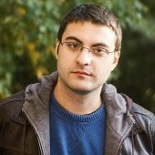

|  |
Postdoctoral Associate at Gerstein Lab Email: can.kockan at yale dot edu [Google Scholar, CV] |
I am interested in a broad range of bioinformatics problems, currently focusing on privacy-preserving and secure algorithm development for genomics and multi-omics analysis. Throughout my Ph.D. studies I have designed and implemented such algorithms for Genome-Wide Association Studies, machine learning based disease outcome prediction, and genotype imputation on the Intel SGX platform. Previously during my M.Sc. I have developed methods for detecting low frequency Single Nucleotide Variants (SNVs) and small insertions/deletions from cell-free DNA via liquid biopsies.
Ph.D. in Computer Science, Indiana University, 08/2016 - 10/2021
Advisor: S. Cenk Sahinalp
Pre-doctoral Fellow, Cancer Data Science Laboratory, National Cancer Institute, National Institutes of Health, 12/2019 - 09/2021
M.Sc. in Computer Science, Simon Fraser University, 08/2014 - 08/2016
B.Sc. in Computer Science, Bilkent University, 09/2010 - 06/2014